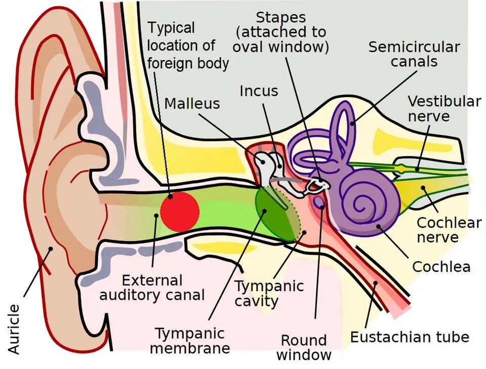
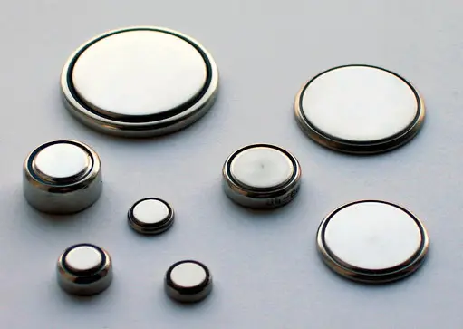

DX.5 — Corps étranger du conduit auditif
Le corps étranger du conduit se voit à l’otoscope, et sa nature décide de tout : pile bouton et insecte vivant imposent un geste immédiat S1S3. Le pronostic se joue à la première tentative, si bien que l’objet rond, profond ou déjà manipulé part directement chez l’oto-rhino-laryngologiste (ORL) S1S8.
1. Définition
Le corps étranger du conduit auditif externe est un objet inerte ou un animal vivant logé dans le conduit, entre le méat et la membrane tympanique S1. La recommandation britannique le classe en objets inertes hygroscopiques, objets inertes non hygroscopiques, arthropodes vivants et piles bouton, car chaque groupe impose un geste distinct S1.
2. Épidémiologie (Suisse, puis Europe)
Aucune série suisse publiée n’a été retrouvée ; le conduit auditif reste pourtant l’un des sièges les plus fréquents de corps étranger, chez l’enfant comme chez l’adulte S1. Les services d’urgence français reçoivent chaque jour des corps étrangers du nez, de la gorge ou de l’oreille, et la localisation auriculaire touche surtout le jeune enfant S3. Le tableau des séries rassemble une série française, puis deux séries américaines signalées comme non européennes S4S7S8. Les types d’objets et l’histoire naturelle expliquent pourquoi le délai et la nature de l’objet décident du geste S1S3.
Corps étranger auriculaire : données chiffrées par série
| Donnée | Population et lieu | Année | Source |
|---|---|---|---|
| 35 enfants traités en 15 mois, de 15 mois à 14 ans, âge moyen 6,5 ans | Service ORL de l’hôpital Robert-Debré, Paris | 1998 | S4 |
| Sexe ratio de 1,2 (19 garçons, 16 filles) ; corps étranger bilatéral chez 5 enfants | Même série parisienne | 1998 | S4 |
| Perles dans 8 cas sur 40 et blattes dans 7 cas sur 40 | Même série parisienne | 1998 | S4 |
| Complications chez 11 enfants sur 35 | Même série parisienne | 1998 | S4 |
| 698 corps étrangers chez 605 enfants en 6 ans | Centre pédiatrique de référence, Wisconsin, source non européenne | 2002 | S7 |
| Succès de 77 % sous vision directe et de 86 % sous otomicroscopie | Même série américaine | 2002 | S7 |
| 162 patients ; 67 % traités par les urgences, 33 % adressés à l’ORL | Urgences universitaires de Rochester, source non européenne | 2003 | S8 |
| Anesthésie générale nécessaire chez 19 % des patients adressés à l’ORL | Même série de Rochester | 2003 | S8 |
Ces séries viennent de centres hospitaliers ; elles surestiment donc probablement les cas difficiles, ce qui reste une déduction faute de donnée de premier recours S4S7S8.
La série parisienne montre déjà les deux constantes utiles en pratique : l’enfant d’âge scolaire et la fréquence des corps étrangers multiples ou bilatéraux S4.
Types d’objets et degré d’urgence
| Groupe | Exemples cités | Risque propre | Délai d’extraction | Source |
|---|---|---|---|---|
| Pile bouton | Pile de montre, mini-pile | Nécrose des parois du conduit au contact de l’humidité | Immédiat | S1S3 |
| Arthropode vivant | Insecte, blatte | Douleur et bruit insupportables | Immédiat, après avoir tué l’animal | S1S3 |
| Inerte hygroscopique | Haricot, cacahuète, grain de riz, éponge | Gonflement et enclavement par hydratation | Rapide, avant le gonflement | S1 |
| Inerte non hygroscopique | Perle, plastique, gomme, papier, caillou | Œdème du conduit si le séjour se prolonge | Non urgent | S1 |
| Débris fins | Grains de sable, cheveux après une coupe | Aucun risque propre décrit | Élimination spontanée | S3 |
La pile bouton et l’insecte vivant restent les deux seules urgences d’extraction ; les autres objets justifient une extraction programmée par la personne la mieux équipée S1S3.
Histoire naturelle et complications
| Étape | Ce qui se passe | Conséquence | Source |
|---|---|---|---|
| Introduction | L’enfant avoue rarement le geste, et l’objet est souvent découvert par hasard | Diagnostic à l’otoscopie systématique | S1S2 |
| Séjour prolongé | Le conduit s’œdématie autour de l’objet | Extraction plus difficile et plus douloureuse | S1 |
| Présentation tardive | Les parents remarquent un écoulement purulent teinté de sang ou une mauvaise odeur | Otite externe réactionnelle à traiter après l’extraction | S1 |
| Tentatives répétées | Chaque échec réduit les chances de la tentative suivante | Complications plus fréquentes | S1S7 |
| Complications décrites | Lacération du conduit (5), otite externe (5), adénite cervicale (3), syndrome septique (1), perforation (1) | Surveillance après extraction | S4 |
| Lésion profonde | Perforation du tympan, luxation de la chaîne ossiculaire | Avis ORL et contrôle auditif | S1 |
3. Physiopathologie
Le conduit auditif externe présente un rétrécissement à la jonction de ses parties cartilagineuse et osseuse ; l’objet qui franchit ce point s’y enclave et devient difficile à extraire S1. La base anatomique et la chaîne causale par type d’objet relient ainsi chaque objet à son risque propre, puis à son geste S1S3.
Base à connaître : le conduit et ses voisins
| Structure | Ce qui compte pour le corps étranger | Source |
|---|---|---|
| Méat et pavillon | La traction du pavillon vers le haut et l’arrière redresse le conduit pour l’examen | S1 |
| Jonction osseuse et cartilagineuse | Point d’enclavement de l’objet, qui rend l’extraction plus difficile | S1 |
| Membrane tympanique | Un objet à son contact ou une tentative brutale peut la perforer | S1S7 |
| Chaîne ossiculaire | Une pénétration profonde peut la luxer | S1 |
| Oreille interne | Un vertige ou des acouphènes permanents signalent une atteinte profonde | S2 |
| Nerf facial | Une paralysie faciale après le traumatisme impose une prise en charge spécialisée immédiate | S2 |
Le schéma en couleurs placé plus bas situe l’objet typique dans le conduit, en dehors du tympan S13.
Chaîne causale : de l’objet au symptôme
| Objet | Mécanisme | Symptôme ou lésion | Source |
|---|---|---|---|
| Pile bouton | Contact avec un milieu humide, puis nécrose rapide des parois | Lésion caustique du conduit | S3 |
| Insecte vivant | Mouvements et battements d’ailes contre la peau et le tympan | Douleur, bruit, enfant affolé | S2S3 |
| Graine ou éponge | Absorption d’eau, gonflement, enclavement | Obstruction croissante, irrigation contre-indiquée | S1 |
| Perle ou objet rond | Surface lisse que la pince repousse vers le fond | Enfoncement iatrogène | S1S8 |
| Tout objet ancien | Œdème et infection de la peau du conduit | Otorrhée, mauvaise odeur, adénite | S1S4 |
| Tentative maladroite | Lésion du conduit ou du tympan | Saignement qui masque la vue, perforation | S1S7 |
La conséquence pratique se lit dans la dernière colonne : l’objet rond et la tentative maladroite causent davantage de dégâts que la plupart des objets eux-mêmes S1S7S8.
Siège typique d’un corps étranger dans l’oreille. Ce schéma en couleurs montre le conduit auditif en vert et un objet rouge dans sa partie latérale S13.

Le lecteur doit d’abord repérer seul l’objet, puis la membrane tympanique qui ferme le conduit.
La copie annotée porte des repères numérotés, que la lecture guidée explique un par un.
- Le disque rouge figure le siège typique de l’objet, dans la partie externe du conduit S13.
- La membrane tympanique, en vert foncé, sépare le conduit de la caisse ; un objet à son contact échoue plus souvent sous vision directe S7.
- La partie interne du conduit, osseuse, se rétrécit ; l’objet qui y glisse s’enclave et justifie l’otomicroscopie S1.
- Le marteau appartient à la chaîne ossiculaire, qu’une pénétration profonde peut luxer S1.
Ce que l’image décide. Un objet visible en dehors du rétrécissement se retire en premier recours ; un objet profond ou contre le tympan part chez l’ORL S1S7.
4. Démarche diagnostique
La démarche commence par le tri des deux urgences, pile bouton et insecte vivant, puis elle identifie l’objet avant de choisir un seul geste bien préparé S1S3. Les six étapes fixent cet ordre, le tableau comparatif sépare le corps étranger de ses voisins, et les pièges rappellent les erreurs fréquentes S1S2.
Démarche en six étapes
| Étape | Action | Décision qui en découle | Source |
|---|---|---|---|
| 1. Trier l’urgence | Rechercher une pile bouton, un insecte vivant ou des signes de gravité | Extraction immédiate ou avis ORL urgent | S1S2 |
| 2. Voir l’objet | Otoscope en premier recours, otomicroscopie ou oto-endoscopie chez l’ORL | Nature, forme, profondeur, contact tympanique | S1 |
| 3. Juger la coopération | Évaluer si le patient tient immobile et si une sédation sûre existe | Patient non coopérant sans sédation : aucune tentative | S1 |
| 4. Choisir le geste | Pince, crochet mousse coudé, irrigation ou noyade de l’insecte | Une seule méthode, adaptée à l’objet | S1 |
| 5. Réussir la première tentative | Préparer lumière, instrument et contention avant de commencer | Échec : arrêt et orientation ORL | S1S8 |
| 6. Contrôler | Revoir conduit et tympan, examiner l’autre oreille et les narines | Lésion à traiter, autre corps étranger à retirer | S1S4 |
Tableau comparatif : corps étranger et diagnostics voisins de l’otalgie
| Diagnostic | Ce qui le rapproche | Ce qui le distingue | Source |
|---|---|---|---|
| Corps étranger | Oreille bouchée, otalgie, baisse auditive, écoulement | Objet vu à l’otoscope, parfois aveu ou témoin | S1 |
| Bouchon de cérumen (DX.3) | Oreille bouchée et baisse auditive | Matière cireuse sans objet identifiable ; déduction tirée de l’otoscopie | S1S2 |
| Otite externe aiguë (DX.1) | Otalgie, écoulement, conduit inflammatoire | Peut compliquer un objet ancien : chercher l’objet derrière l’œdème | S2S5 |
| Perforation tympanique traumatique | Douleur brutale, baisse auditive, acouphènes | Traumatisme ou objet pointu ; vertige possible | S6 |
| Barotraumatisme (DX.4) | Oreille bouchée et douloureuse | Contexte de pression, conduit libre ; déduction faute de comparaison publiée | S6 |
Ce tableau compare des présentations ; seule l’otoscopie tranche, ce qui explique que l’examen de l’oreille précède tout traitement d’otalgie S1S3.
Pièges de la démarche
| Piège | Conséquence | Parade | Source |
|---|---|---|---|
| Tenter une deuxième ou troisième extraction aux urgences | Échec quasi constant, perforation, anesthésie générale | Adresser directement à l’ORL après un échec | S8 |
| Saisir une perle à la pince | Objet enfoncé vers le tympan | Crochet mousse coudé passé derrière l’objet | S1 |
| Irriguer une graine ou une pile | Gonflement de la graine, lésion caustique de la pile | Retrait instrumental sans eau | S1 |
| Oublier les autres orifices | Deuxième corps étranger méconnu | Examiner l’autre oreille et les fosses nasales | S1 |
| Croire l’enfant qui nie | Diagnostic manqué | Otoscopie devant toute otorrhée fétide unilatérale | S1S2 |
5. Anamnèse ciblée et drapeaux rouges
L’anamnèse précise l’objet, l’heure, les tentatives déjà faites et les signes qui trahissent une atteinte profonde, car ces quatre réponses changent la conduite S1S2S8. Les questions ciblées, les drapeaux rouges et les populations particulières détaillent ce tri S1S2.
Questions ciblées et ce que la réponse change
| Question | Réponse qui change la conduite | Conséquence | Source |
|---|---|---|---|
| Quel objet, et pourrait-il s’agir d’une pile ? | Pile bouton ou objet inconnu chez un petit enfant | Extraction immédiate, sans irrigation | S1S3 |
| L’objet bouge-t-il, bourdonne-t-il ? | Insecte vivant | Le tuer dans l’huile avant le retrait | S1 |
| Depuis quand ? | Plus de 24 heures | Succès plus faible sous vision directe | S7 |
| Quelqu’un a-t-il déjà essayé de le retirer ? | Une tentative ou plus | Avis ORL direct, sans nouvelle manipulation | S8 |
| Quels symptômes ? | Otalgie, plénitude, baisse auditive, écoulement | Lésion du conduit ou otite réactionnelle à rechercher | S1 |
| Vertige, acouphènes permanents, visage asymétrique ? | Réponse positive | Lésion profonde, avis ORL urgent | S2 |
Chez l’enfant, la question de l’aveu a peu de valeur, car l’enfant reconnaît rarement l’incident ; la découverte reste souvent fortuite S1S2.
Drapeaux rouges et délai de réponse
| Drapeau rouge | Signification | Délai | Source |
|---|---|---|---|
| Pile bouton dans le conduit | Nécrose caustique possible | Extraction immédiate | S1S3 |
| Douleurs importantes sans accalmie | Corps étranger avec otite réactionnelle ou blessure | Urgences ou ORL le jour même | S2 |
| Saignement persistant | Blessure du conduit ou plus profonde | Urgences ou ORL le jour même | S2 |
| Vertige ou acouphènes permanents | Atteinte de l’oreille interne possible | ORL en urgence | S2 |
| Paralysie faciale | Lésion profonde | ORL en urgence | S2 |
| Écoulement franc de liquide clair teinté de sang | Brèche profonde présumée | ORL en urgence | S2 |
| Objet invisible, contre le tympan ou dans la partie médiale | Risque tympanique élevé | Orientation ORL | S1 |
Populations particulières
| Population | Particularité | Adaptation | Source |
|---|---|---|---|
| Jeune enfant | Introduction fréquente, aveu rare, objets multiples | Otoscopie bilatérale et examen des narines | S1S2S3 |
| Patient non coopérant | Mouvement brusque pendant le geste | Pas de tentative sans sédation sûre ; sédation ou anesthésie chez l’ORL | S1 |
| Patient déjà manipulé | Conduit lésé et objet enfoncé | Orientation ORL directe | S8 |
| Adulte avec insecte | Panique, douleur aiguë | Huile d’abord, extraction ensuite | S1 |
| Tympan perforé connu | Irrigation interdite | Retrait instrumental | S1 |
6. Examen physique ciblé, région par région
L’examen suit le trajet du son, du pavillon au tympan, puis il vérifie le nerf facial, l’équilibre, l’autre oreille et les fosses nasales S1S2. Chaque région possède sa fenêtre : pavillon et méat, conduit, tympan et audition, nerf facial et équilibre, puis autres orifices et cou S1S4.
Région 1 — Pavillon et méat
| Geste | Trouvaille | Interprétation | Source |
|---|---|---|---|
| Traction du pavillon vers le haut et l’arrière | Conduit redressé, méat exposé | Condition d’une bonne vue | S1 |
| Inspection du méat | Écoulement purulent teinté de sang, odeur | Objet ancien probable | S1 |
| Palpation douce | Douleur vive au contact | Otite réactionnelle à rechercher derrière l’objet ; déduction tirée du protocole genevois | S5 |
Région 2 — Conduit auditif externe
| Geste | Trouvaille | Interprétation | Source |
|---|---|---|---|
| Otoscopie, lumière frontale | Objet visible, nature et forme | Choix de l’instrument | S1 |
| Repérage de la profondeur | Objet latéral ou médial, au contact du tympan | Objet médial ou au contact : ORL | S1S7 |
| Inspection de la peau | Œdème, lacération, saignement | Séjour prolongé ou tentative antérieure | S1S4 |
| Recherche de mouvement | Insecte vivant | Noyade dans l’huile avant le retrait | S1 |
Un saignement limite la vue et peut enfoncer l’objet, si bien que le médecin s’arrête dès qu’il ne voit plus l’objet S1.
Région 3 — Membrane tympanique et audition
| Geste | Trouvaille | Interprétation | Source |
|---|---|---|---|
| Otoscopie après extraction | Tympan entier | Fin du geste, pas d’autre examen | S1 |
| Otoscopie après extraction | Perforation | Avis ORL ; deux tiers des perforations traumatiques se referment seules | S6 |
| Interrogatoire | Baisse auditive, acouphènes | Atteinte tympanique ou plus profonde | S6 |
| Interrogatoire | Vertige | Atteinte profonde possible, avis ORL | S2S6 |
Région 5 — Autres orifices et cou
7. Approche syndromique
Quatre tableaux cliniques mènent au corps étranger ; ils diffèrent par l’âge, le bruit, l’écoulement et la présence d’un traumatisme récent S1S2. Le tableau des syndromes relie chaque tableau à son diagnostic et à la conduite qui en découle S1S2S6.
Syndromes et diagnostics associés
| Syndrome | Diagnostic à évoquer | Conduite | Source |
|---|---|---|---|
| Oreille bouchée unilatérale avec objet visible | Corps étranger inerte | Extraction programmée adaptée à l’objet | S1 |
| Otalgie brutale avec bruit, patient affolé | Insecte vivant | Huile, puis extraction | S1S2 |
| Otorrhée fétide teintée de sang chez l’enfant | Corps étranger ancien avec otite réactionnelle | Otoscopie, extraction, traitement de l’otite | S1S5 |
| Douleur, baisse auditive et vertige après un geste | Perforation ou lésion profonde | ORL en urgence | S2S6 |
8. Diagnostic positif et critères
Le diagnostic est positif lorsque l’objet est vu dans le conduit ; l’otoscopie le pose même quand aucun adulte n’a assisté à l’incident S1S3. Les critères de gravité décident ensuite du lieu et du délai de l’extraction S1S2.
Critères du diagnostic et de la gravité
| Critère | Définition opérationnelle | Conséquence | Source |
|---|---|---|---|
| Diagnostic positif | Objet ou animal vu à l’otoscope dans le conduit | Classer l’objet | S1S3 |
| Urgence d’extraction | Pile bouton ou insecte vivant | Geste immédiat | S1S3 |
| Avis ORL | Objet invisible, pénétrant, médial, contre le tympan, ou échecs répétés | Otomicroscopie, sédation possible | S1 |
| Gravité clinique | Vertige, paralysie faciale, liquide clair, douleur ou saignement persistants | ORL en urgence | S2 |
| Contre-indication au geste | Patient non coopérant sans sédation sûre | Aucune tentative en premier recours | S1 |
9. Examens complémentaires
Le diagnostic reste visuel : la recommandation britannique prévoit l’otoscope en premier recours, puis l’otomicroscopie ou l’oto-endoscopie chez l’ORL S1. Le tableau des examens ciblés et le compte rendu d’otoscopie précisent leur indication, leur interprétation et la conduite qui suit ; aucune imagerie n’y figure en routine S1S5S6.
Examens ciblés : indication, interprétation, conduite
| Examen | Indication | Interprétation | Conduite | Source |
|---|---|---|---|---|
| Otoscopie | Toute suspicion, toute otalgie ou otorrhée unilatérale | Objet visible, siège, contact tympanique | Extraction ou orientation | S1 |
| Otomicroscopie ou oto-endoscopie | Objet profond, rond, au contact du tympan, échec antérieur | Vue binoculaire et instruments fins | Extraction par l’ORL | S1S7 |
| Otoscopie de contrôle | Après toute extraction | Tympan entier ou perforé, lésion du conduit | Traitement local ou avis ORL | S1S6 |
| Bilan auditif par l’ORL | Perforation, baisse auditive persistante | Perforation fermée ou non | Tympanoplastie si la perforation persiste | S6 |
| Prélèvement du conduit | Otite réactionnelle compliquée ou terrain à risque | Germe et sensibilité | Antibiothérapie adaptée | S5S9 |
Le protocole genevois traite l’otite externe simple sans prélèvement, alors que l’information professionnelle suisse (AIPS) de Ciproxin® HC (ciprofloxacine et hydrocortisone) demande un test de sensibilité avant le traitement S5S9.
Ce que le compte rendu d’otoscopie doit noter
| Élément noté | Pourquoi il compte | Décision liée | Source |
|---|---|---|---|
| Type d’objet | Pile, insecte, graine ou objet inerte | Délai et méthode | S1 |
| Forme de l’objet | Rond et lisse ou saisissable | Crochet ou pince | S1S8 |
| Siège et profondeur | Latéral, médial, au contact du tympan | Premier recours ou ORL | S1S7 |
| Anomalie otologique associée | Perforation, drain, otite | Irrigation interdite si perforation | S1 |
| Coopération du patient | Immobilité possible ou non | Sédation ou abstention | S1 |
| Tentatives antérieures | Chaque échec aggrave le pronostic | Orientation directe | S8 |
| Autre oreille et narines | Objets multiples fréquents | Second retrait | S1S4 |
La recommandation britannique impose de considérer le type, la forme, le siège, les anomalies otologiques et la coopération avant tout geste S1. Un compte rendu qui note ces éléments permet aussi à l’ORL de reprendre la situation sans réexaminer inutilement l’enfant, ce qui reste une déduction S1.
10. Arbre décisionnel
- Le médecin examine les deux oreilles et les narines ; un objet vu dans le conduit confirme le diagnostic S1.
- Une pile bouton impose l’extraction immédiate sans irrigation, tandis qu’un insecte vivant est d’abord noyé dans l’huile S1S3.
- Un vertige, une paralysie faciale, un liquide clair ou un saignement persistant conduisent aux urgences ORL S2.
- Un patient non coopérant sans sédation sûre, un objet invisible, médial, pénétrant ou contre le tympan partent chez l’ORL S1.
- Un objet déjà manipulé sans succès part directement chez l’ORL, sans nouvelle tentative S8.
- Les autres objets sont retirés une seule fois, à la pince, au crochet ou par irrigation selon leur nature S1.
- Après le retrait, le médecin contrôle le tympan, puis traite une lésion du conduit ou une otite réactionnelle S1S5.
11. Prise en charge selon les recommandations suisses
11.A Le but est de retirer l’objet en un seul geste, sans perforer le tympan ni léser le conduit, puis de traiter les complications locales S1S8. La guérison associe un conduit libre, un tympan entier ou suivi par l’ORL, et la disparition de la douleur et de l’écoulement S1S5S6.
11.B Les moyens suivent une chronologie et dépendent de l’objet, comme le montrent l’urgence par type et la méthode d’extraction S1. L’orientation spécialisée, les niveaux de soin, la préparation du geste et le traitement après le retrait complètent ce dispositif S1S5. Les fiches Ciproxin® HC et Dafalgan® enfant, Dafalgan® et Panotile reprennent l’AIPS mot pour mot pour la grossesse, l’allaitement et les contre-indications S9S10.
Conduite chronologique, de l’arrivée au suivi
| Moment | Action | Responsable | Critère de passage | Source |
|---|---|---|---|---|
| Arrivée | Trier pile, insecte vivant et signes de gravité | Médecin de premier recours | Urgence : geste immédiat ou ORL | S1S2 |
| Premières minutes | Noyer l’insecte vivant dans l’huile | Tout soignant | Insecte immobile | S1 |
| Avant le geste | Vérifier lumière, instrument, coopération, tympan | Médecin | Liste de contrôle complète | S1 |
| Geste | Une seule tentative adaptée à l’objet | Médecin ou ORL | Objet retiré ou arrêt | S1S8 |
| Juste après | Contrôler tympan, conduit, autre oreille, narines | Médecin | Lésion, perforation ou second objet | S1S4 |
| 48 à 72 heures | Revoir une otite réactionnelle traitée | Médecin de premier recours | Amélioration ou recherche de complication | S5 |
| Semaines suivantes | Suivre la fermeture d’une perforation | ORL | Tympan fermé ou tympanoplastie | S6 |
Ce calendrier assemble des règles de sources différentes ; leur enchaînement relève donc d’une déduction, mais chaque étape repose sur une source lue S1S5S6.
Conduite par type d’objet
| Objet | Délai | Geste recommandé | Geste interdit | Source |
|---|---|---|---|---|
| Pile bouton | Immédiat | Retrait instrumental en urgence | Irrigation | S1S3 |
| Insecte vivant | Immédiat | Noyer l’insecte dans une huile végétale ou minérale, puis le retirer | Extraction à la pince d’un insecte vivant | S1S2 |
| Graine, riz, éponge | Avant le gonflement | Retrait instrumental | Irrigation | S1 |
| Perle, objet rond lisse | Programmé | Crochet mousse coudé passé derrière l’objet | Pince qui repousse l’objet | S1 |
| Objet mou, coton | Programmé | Pince fine sous lumière frontale | Tentatives répétées | S1 |
| Petit objet inorganique ou insecte mort | Programmé | Irrigation si le tympan est intact | Irrigation sur perforation suspecte | S1 |
| Sable, cheveux fins | Aucun | Attendre l’élimination spontanée | Geste inutile | S3 |
La fiche française propose une eau savonneuse tiède pour tuer l’insecte, alors que la recommandation britannique retient l’huile S1S2. Cette divergence laisse intact le principe commun : tuer l’animal avant tout retrait S1S2.
Méthodes d’extraction : indication, limite, échec
| Méthode | Indication | Limite ou contre-indication | Critère d’échec | Source |
|---|---|---|---|---|
| Pince fine et lumière frontale | Objet mou ou saisissable | Objet rond, conduit saignant | Objet non saisi au premier essai | S1 |
| Crochet mousse coudé | Perle, objet rond lisse | Objet au contact du tympan | Objet qui recule | S1 |
| Irrigation | Petit objet inorganique, insecte mort | Perforation suspecte, pile, objet hygroscopique | Objet toujours présent après le lavage | S1 |
| Huile dans le conduit | Insecte vivant | Hors AIPS, aucun produit ni dose fixés par une information professionnelle | Insecte encore mobile | S1 |
| Otomicroscopie chez l’ORL | Objet profond, rond, échec antérieur | Patient agité sans sédation | Passage à l’anesthésie générale | S1S7 |
| Sédation ou anesthésie générale | Patient non coopérant, risque tympanique élevé | Décision spécialisée | Sans objet | S1S8 |
La série américaine de 698 cas montre un succès plus faible sous vision directe pour les objets sphériques, ceux au contact du tympan et ceux restés plus de 24 heures S7.
Dans la série de Rochester, 72 % des objets adressés à l’ORL étaient fermes et ronds, comme des perles ou des haricots S8.
Orientation vers l’ORL : quand et pourquoi
| Situation | Raison | Délai | Source |
|---|---|---|---|
| Objet invisible | Geste à l’aveugle dangereux | Rapide | S1 |
| Objet qui pourrait pénétrer le tympan | Risque de lésion de l’oreille moyenne | Rapide | S1 |
| Plusieurs tentatives infructueuses | Chaque échec réduit les chances suivantes | Rapide, sans nouvelle tentative | S1S8 |
| Objet enclavé dans la partie médiale ou contre le tympan | Vision directe insuffisante | Rapide | S1S7 |
| Signes de gravité | Atteinte profonde possible | Urgence | S2 |
Les patients déjà manipulés avant l’arrivée aux urgences ont tous échoué aux nouvelles tentatives sous vision directe dans la série de Rochester S8. Adressés directement à l’ORL, ils évitaient plus souvent l’anesthésie générale, ce qui justifie l’orientation sans nouveau geste S8.
Qui fait quoi : trois niveaux de soin
| Niveau | Acteur | Ce qu’il fait | Source |
|---|---|---|---|
| Niveau 1 | Soignant non médecin de proximité | Examen avec une source de lumière, patient tirant le tragus en avant, noyade d’un insecte vivant dans l’huile | S1 |
| Niveau 2 | Médecin | Otoscopie, pince fine pour objet mou, crochet mousse pour objet rond, irrigation si permise | S1 |
| Niveau 3 | ORL | Otomicroscopie ou oto-endoscopie, pince crocodile, crochet, anse, sédation ou anesthésie | S1 |
Le niveau 1 utilise toute lumière disponible, y compris une lampe de poche ou la lumière d’un téléphone, ce qui suffit pour trier l’urgence S1. Le médecin de premier recours correspond au niveau 2, et il passe la main au niveau 3 dès que l’objet sort de son champ de sécurité S1.
Préparer la première tentative : liste de contrôle
| Point à vérifier | Raison | Si la réponse est non | Source |
|---|---|---|---|
| Lumière frontale ou otoscope prêts | Les mains restent libres et la vue reste nette | Différer le geste | S1 |
| Instrument choisi selon l’objet | Pince pour le mou, crochet pour le rond | Changer d’instrument avant de commencer | S1 |
| Patient immobile ou sédation sûre | Un mouvement brusque blesse le conduit ou le tympan | Aucune tentative, orientation ORL | S1 |
| Tympan présumé intact avant l’irrigation | Une perforation interdit l’eau | Retrait instrumental | S1 |
| Objet visible en entier | Un geste à l’aveugle enfonce l’objet | Orientation ORL | S1 |
Cette liste découle de la règle britannique selon laquelle la première tentative est critique, car le succès baisse après chaque échec S1.
Traitement structuré après le retrait
| Situation | Molécule ou geste | Dose et durée | Contrôle | Critère d’échec | Source |
|---|---|---|---|---|---|
| Douleur de l’enfant | Paracétamol, Dafalgan® enfant sirop | Dose unique de 15 mg/kg, 3 à 4 prises par jour, intervalle de 6 à 8 heuresS10 | Douleur réévaluée au contrôle | Douleur qui persiste malgré l’antalgique | S10 |
| Otite externe réactionnelle, tympan intact | Ciprofloxacine et hydrocortisone, Ciproxin® HC | Trois gouttes deux fois par jour, dès deux ans, pendant sept jours | Contrôle à 48–72 heures selon le protocole genevois | Évolution défavorable : chercher une complication | S9S5 |
| Douleur de l’adulte | Paracétamol, Dafalgan® | 500 à 1000 mg par prise, sans dépasser 4000 mg par jourS11 | Douleur réévaluée au contrôle | Douleur persistante : chercher une lésion profonde | S11S2 |
| Lésion préexistante du conduit | Éviter Panotile (néomycine, polymyxine B, fludrocortisone, lidocaïne) | Contre-indication de l’AIPS | Sans objet | Sans objet | S12 |
| Perforation tympanique | Aucune goutte ototoxique | Avis ORL | Suivi ORL de la cicatrisation | Perforation non fermée : tympanoplastie | S5S6 |
| Lacération simple du conduit | Surveillance | Sans traitement fixé par les sources lues | Contrôle selon les symptômes | Apparition d’une otite externe | S4 |
L’AIPS de Ciproxin® HC contre-indique la perforation connue ou supposée du tympan ; le contrôle otoscopique précède donc toute prescription de gouttes S9.
Ciprofloxacine et hydrocortisone — Ciproxin® HC (n° 54807)
| Rubrique | Contenu de l'AIPS |
|---|---|
| Indication | L’AIPS vise les inflammations bactériennes aiguës de l’oreille externe dues à des germes sensibles à la ciprofloxacineS9. |
| Dose AIPS | Chez les enfants dès deux ans, les adolescents et les adultes : trois gouttes dans l’oreille atteinte, deux fois par jourS9. |
| Durée AIPS | L’instillation se poursuit pendant sept joursS9. |
| Contre-indications | « Hypersensibilité à un principe actif, à un antibiotique du groupe des quinolones ou à l'un des excipients. · Patients présentant une perforation connue ou supposée du tympan. · Infections virales du conduit auditif externe · Infections fongiques »S9. |
| Grossesse | « C'est pourquoi Ciproxin HC Suspension auriculaire en gouttes ne doit pas être utilisé pendant la grossesse, ou uniquement en cas d'absolue nécessité »S9. |
| Allaitement | « C'est pourquoi Ciproxin HC Suspension auriculaire en gouttes ne doit pas être utilisé pendant l'allaitement, ou uniquement en cas d'absolue nécessité »S9. |
| Mise à jour | Mars 2024S9. |
Cette fiche ne concerne que l’otite réactionnelle après l’extraction ; le produit ne sert jamais à déloger l’objet lui-même, ce qui découle de son indication S9.
Paracétamol — Dafalgan® enfant, sirop (n° 43838)
| Rubrique | Contenu de l'AIPS |
|---|---|
| Indication | L’AIPS cite les douleurs d’intensité faible à modérée et le traitement symptomatique de la fièvreS10. |
| Dose AIPS | Une dose unique correspond à 15 mg de paracétamol/kg de poids corporel, avec 3 à 4 doses par jour au maximumS10. |
| Maximum AIPS | Le dosage quotidien maximal ne doit pas excéder 75 mg/kg de poids corporel chez l’enfantS10. |
| Durée AIPS | La durée d’utilisation continue maximale sans consultation médicale est de 3 jours jusqu’à 12 ansS10. |
| Contre-indications | « Hypersensibilité au paracétamol et aux substances apparentées (p.ex. propacétamol) ou à un des excipients selon la composition. · Troubles fonctionnels hépatiques graves (cirrhose hépatique et ascite)/hépatite aiguë ou maladie hépatique décompensée active. · Hyperbilirubinémie constitutionnelle héréditaire (maladie de Gilbert) »S10. |
| Grossesse | « En cas de nécessité clinique, le paracétamol peut être pris ou utilisé pendant la grossesse »S10. |
| Allaitement | « Bien que l'utilisation du paracétamol soit considérée comme compatible avec l'allaitement, la prudence est de mise lors de l'utilisation du Dafalgan pendant l'allaitement »S10. |
| Mise à jour | Septembre 2025S10. |
Le sirop soulage l’enfant pendant l’attente de l’ORL, mais il ne retarde jamais l’extraction d’une pile ou d’un insecte vivant S1S10.
Paracétamol — Dafalgan® (n° 47503)
| Rubrique | Contenu de l'AIPS |
|---|---|
| Indication | L’AIPS cite les douleurs d’intensité faible à modérée, dont les douleurs après blessuresS11. |
| Dose AIPS | Au-delà de 40 kg et chez l’adulte : 500 à 1000 mg par priseS11. |
| Maximum AIPS | La dose journalière maximale de 4000 mg de paracétamol ne doit pas être dépasséeS11. |
| Contre-indications | « Hypersensibilité au paracétamol et aux substances apparentées (p.ex. propacétamol) ou à un des excipients selon la composition »S11. |
| Grossesse | « En cas de nécessité clinique, le paracétamol peut être pris ou utilisé pendant la grossesse »S11. |
| Allaitement | « Bien que l'utilisation du paracétamol soit considérée comme compatible avec l'allaitement, la prudence est de mise lors de l'utilisation du Dafalgan pendant l'allaitement »S11. |
| Mise à jour | Juillet 2026S11. |
Chez l’adulte piqué par un insecte, l’antalgique accompagne la noyade de l’animal mais ne la remplace jamais S1S11.
Néomycine, polymyxine B, fludrocortisone et lidocaïne — Panotile (n° 31957)
| Rubrique | Contenu de l'AIPS |
|---|---|
| Indication | L’AIPS cite les otites externes aiguës et la furonculose du conduit auditifS12. |
| Dose AIPS | Adultes : 4 à 5 gouttes 2 à 4 fois par jour ; enfants : 2 à 3 gouttes 3 à 4 fois par jourS12. |
| Contre-indications | « Panotile ne doit pas être utilisé lors d’une perforation du tympan, après interventions chirurgicales et lors d’une lésion préexistante du conduit auditif »S12. |
| Grossesse | « La prudence est de mise en cas d'emploi pendant la grossesse et l'allaitement »S12. |
| Allaitement | « La prudence est de mise en cas d'emploi pendant la grossesse et l'allaitement »S12. |
| Mise à jour | Mars 2021S12. |
Après une extraction qui a lacéré le conduit, cette contre-indication écarte Panotile, car l’AIPS invoque un risque de surdité par ototoxicité S12.
11.C La surveillance porte sur le conduit, le tympan et l’apparition d’une otite réactionnelle ; le calendrier de surveillance fixe le moment, l’objet et le critère d’échec S4S5S6. Une perforation reste suivie par l’ORL jusqu’à sa fermeture, car une perforation persistante évolue vers une otite moyenne chronique S6.
Surveillance : quand, quoi, critère d’échec
| Moment | Ce que l’on contrôle | Critère d’échec | Conduite si échec | Source |
|---|---|---|---|---|
| Juste après le retrait | Conduit, tympan, autre oreille, narines | Perforation, lésion, deuxième objet | Avis ORL ou second retrait | S1S6 |
| 48 à 72 heures en cas d’otite réactionnelle | Douleur, écoulement, œdème | Évolution défavorable | Rechercher une complication, avis ORL | S5 |
| Fin des gouttes, après sept jours | Conduit sec, tympan visible | Écoulement persistant | Réévaluer le diagnostic | S5S9 |
| Suivi ORL d’une perforation | Fermeture du tympan, audition | Perforation non fermée | Tympanoplastie | S6 |
11.D Le pronostic est bon lorsque le premier geste réussit : la série de 698 cas obtenait 77 % de succès sous vision directe et 86 % sous otomicroscopie S7. Il se dégrade après des tentatives répétées, qui augmentent les complications ; la série de Rochester exigeait une anesthésie générale chez 19 % des patients adressés à l’ORL S7S8.
Deux tiers des perforations traumatiques du tympan se referment d’elles-mêmes selon le service d’ORL genevois, ce qui rassure la famille sans dispenser du suivi S6.
Piles bouton de tailles différentes. Cette photographie en couleurs montre plusieurs piles bouton métalliques, de la grande pile plate à la petite pile de montre S14.

Le lecteur doit d’abord distinguer seul les piles plates des piles épaisses de petit diamètre.
Sur la copie annotée, deux repères séparent la grande pile plate de la petite pile épaisse.
Ce que l’image décide. Un objet métallique arrondi chez un petit enfant se traite comme une pile jusqu’à preuve du contraire, ce qui découle des règles britanniques S1.
12. Prévention
La prévention secondaire évite les dégâts du geste : la fiche française déconseille aux parents toute extraction à domicile, qui enfonce souvent l’objet S2. Elle déconseille aussi de mettre de l’eau dans l’oreille devant un objet inerte, ce qui protège notamment les graines du gonflement S1S2. Le tableau de prévention réunit ces conseils et leur fondement S1S2S8.
Prévention : conseils et fondement
| Conseil | Fondement | Source |
|---|---|---|
| Ne pas tenter l’extraction soi-même | Le geste profane enfonce souvent l’objet | S2 |
| Ne pas mettre d’eau devant un objet inerte | Risque de gonflement des objets hygroscopiques | S1S2 |
| Une seule tentative par la personne la mieux équipée | Chaque échec réduit les chances suivantes | S1S8 |
| Examiner tous les orifices après un premier objet | Corps étrangers multiples fréquents chez l’enfant | S1 |
| Consulter vite pour toute pile ou tout insecte | Seules urgences d’extraction | S1S3 |
13. Points clés
- L’otoscopie fait le diagnostic, souvent fortuit chez l’enfant qui avoue rarement le geste S1S2.
- La pile bouton et l’insecte vivant sont les deux seules urgences d’extraction S1S3.
- L’insecte se tue dans l’huile avant le retrait ; la pile se retire sans jamais irriguer S1.
- La première tentative décide du pronostic, car chaque échec diminue les chances suivantes S1S8.
- Un objet rond se retire au crochet mousse coudé, et non à la pince S1.
- L’objet invisible, médial, contre le tympan ou déjà manipulé doit être adressé à l’ORL S1S8.
- Après le retrait, le médecin contrôle le tympan, l’autre oreille et les narines S1.
14. Pièges et questions fréquentes à l'examen fédéral suisse
| Question | Bonne réponse | Raison |
|---|---|---|
| Un enfant de 4 ans a une pile de montre dans l’oreille : faut-il irriguer ? | Non, retrait instrumental immédiat. | L’irrigation est contre-indiquée et la pile nécrose le conduit (point 11) S1S3 |
| Un adulte entend bourdonner un insecte : quel premier geste ? | Le noyer dans une huile végétale ou minérale. | Tuer l’animal soulage et facilite le retrait (point 11) S1 |
| Un haricot est vu dans le conduit : peut-on irriguer ? | Non. | L’objet hygroscopique gonfle au contact de l’eau (point 3) S1 |
| Une perle a résisté à deux essais d’un parent : que faire ? | Adresser à l’ORL sans nouvelle tentative. | Les patients déjà manipulés échouent aux tentatives suivantes (point 11) S8 |
| Quel instrument pour une perle ronde et lisse ? | Un crochet mousse coudé passé derrière elle. | La pince repousse l’objet vers le tympan (point 11) S1 |
| Après l’extraction, que vérifier en plus du tympan ? | L’autre oreille et les narines. | Les corps étrangers multiples sont fréquents (point 6) S1S4 |
| Un enfant a une otorrhée fétide teintée de sang : quel diagnostic chercher ? | Un corps étranger ancien. | C’est le mode de découverte tardif typique (point 7) S1 |
| Un vertige apparaît après une extraction difficile : quelle conduite ? | ORL en urgence. | Le vertige signe une atteinte profonde possible (point 5) S2 |
| Le conduit est lacéré après l’extraction : Panotile convient-il ? | Non. | L’AIPS le contre-indique lors d’une lésion préexistante du conduit (point 11) S12 |
| Un objet reste en place depuis deux jours : la vision directe suffit-elle ? | Souvent non, l’ORL est préférable. | Le succès sous vision directe baisse après 24 heures (point 11) S7 |
Sources
Toutes les sources ont été consultées le 13.11.2026.
- [S1] Oh C, ENT UK — Global ENT Guidelines. Foreign bodies in the external auditory canal, Royaume-Uni, document sans date de version affichée. entuk.org, consulté le 13.11.2026.
- [S2] Société française d’oto-rhino-laryngologie et de chirurgie cervico-faciale (SFORL), fiches « SOS ORL », coordination Serrano E, Juvanon J-M. Mon enfant a quelque chose dans l’oreille, fichier mis en ligne en avril 2020. sforl.org, consulté le 13.11.2026.
- [S3] La Revue du Praticien (France). Corps étrangers en ORL, partie en libre accès lue (paragraphes « Au niveau des oreilles » et « Essentiel »). larevuedupraticien.fr, consulté le 13.11.2026.
- [S4] Dubois M, François M, Hamrioui R. Corps étrangers de l’oreille : à propos d’une série de 40 cas. Arch Pediatr 1998;5(9):970-3, résumé lu (PubMed 9789627). doi:10.1016/s0929-693x(98)80005-5. doi.org, consulté le 13.11.2026.
- [S5] Da Graça S, Voruz F, Guinand N, Spechbach H, Hôpitaux universitaires de Genève (HUG), service de médecine de premier recours. Protocole otite externe aiguë, version du 14.07.2022. hug.ch, consulté le 13.11.2026.
- [S6] Hôpitaux universitaires de Genève (HUG), service d’ORL et de chirurgie cervico-faciale. Perforation tympanique traumatique, dernière mise à jour du 26.03.2026. hug.ch, consulté le 13.11.2026.
- [S7] Schulze SL, Kerschner J, Beste D. Pediatric external auditory canal foreign bodies: a review of 698 cases. Otolaryngol Head Neck Surg 2002;127(1):73-8, résumé lu (PubMed 12161734 ; source non européenne, retenue faute de série suisse). doi:10.1067/mhn.2002.126724. doi.org, consulté le 13.11.2026.
- [S8] Thompson SK, Wein RO, Dutcher PO. External auditory canal foreign body removal: management practices and outcomes. Laryngoscope 2003;113(11):1912-5, résumé lu (PubMed 14603046 ; source non européenne, retenue faute de série suisse). doi:10.1097/00005537-200311000-00010. doi.org, consulté le 13.11.2026.
- [S9] Swissmedic, information professionnelle (AIPS) Ciproxin® HC suspension auriculaire en gouttes (ciprofloxacine et hydrocortisone), n° 54807, Novartis Pharma Schweiz AG, mise à jour mars 2024, lue le 13.11.2026. https://files.refdata.ch/simis-public-prod/MedicinalDocuments/60c59a399aab401fadc6cd1179773b3f-fr.html
- [S10] Swissmedic, information professionnelle (AIPS) Dafalgan® enfant, sirop (paracétamol), n° 43838, UPSA Switzerland AG, mise à jour septembre 2025, lue le 13.11.2026. https://files.refdata.ch/simis-public-prod/MedicinalDocuments/7a077e38e06e42c69de49bde0648bb26-fr.html
- [S11] Swissmedic, information professionnelle (AIPS) Dafalgan® (paracétamol), n° 47503, UPSA Switzerland AG, mise à jour juillet 2026, lue le 13.11.2026. https://files.refdata.ch/simis-public-prod/MedicinalDocuments/783cc01c6fa7448399362d9df7d4be78-fr.html
- [S12] Swissmedic, information professionnelle (AIPS) Panotile gouttes auriculaires (néomycine, polymyxine B, fludrocortisone, lidocaïne), n° 31957, mise à jour mars 2021, lue le 13.11.2026. https://files.refdata.ch/simis-public-prod/MedicinalDocuments/2982497d75d8429f94238a7ee10de662-fr.html
- [S13] Chittka L, Brockmann A, Heilman J. EarFB — Typical location of a foreign body in the ear, CC BY-SA 2.5, Wikimedia Commons. commons.wikimedia.org, consulté le 13.11.2026.
- [S14] Wrodnigg GH. Coin-cells (Knopfzellen), CC BY-SA 2.5, Wikimedia Commons. commons.wikimedia.org, consulté le 13.11.2026.